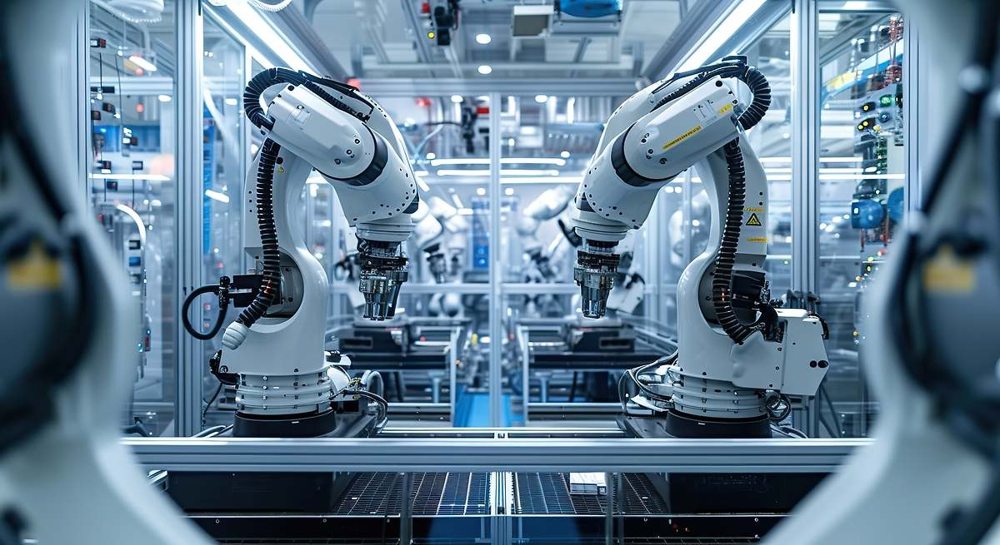

Amazon pisa el acelerador de la automatización: planea sustituir a 600 000 trabajadores por robots en EE.UU.
Un análisis detallado de cómo una de las mayores compañías del mundo apuesta por la automatización masiva y el impacto que esto puede tener sobre el empleo y los procesos empresariales.
Seguir leyendo

La falta de automatización y digitalización lastran la productividad en la industria manufacturera en España
Exploramos los retos que enfrenta la industria española por la escasa adopción de tecnologías digitales y cómo esto está frenando su competitividad en un contexto global.
Seguir leyendo
Un tercio de los pequeños negocios carece de medios para formarse en IA
Un estudio revela que muchas pymes están quedándose atrás en formación tecnológica, lo que podría determinar su viabilidad y crecimiento en la era de la inteligencia artificial.
Seguir leyendo